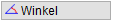
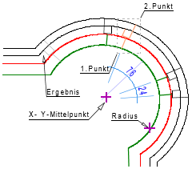

")
Zeichenelemente um den Mittelpunkt eines Bogens zeichnen. Die Elemente werden über den Mittelpunkt und Winkel oder die Bogenlänge dupliziert.
1.Element oder Bereich festlegen
§Ziehen Sie einen Rahmen durch das Anklicken von zwei Punkten um die zu duplizierenden Zeichenelemente oder klicken Sie einzelne Elemente an. Bestätigen Sie die Auswahl mit Rechtsklick. [1.Punkt/Element]; [2.Punkt].
-Die Zeichenelemente werden markiert.
-Um Elemente wieder abzuwählen, klicken Sie im unteren Funktionsbereich auf Entfer. Ziehen Sie einen Rahmen um die entsprechenden Elemente oder klicken Sie einzelne Elemente an. Bei gedrückter Umschalttaste (Shift) wird automatisch der Entfer-Modus aktiviert – am Cursor wird ein Minuszeichen eingeblendet.
2.Mittelpunkt festlegen
§Klicken oder geben Sie Punkte an, die den Mittelpunkt des Bogens bestimmen sollen. [X-Mittelpunkt]; [Y-Mittelpunkt].
Die Zeichenmarke wird an den Mittelpunkt gesetzt. Nutzen Sie ggf. die Hilfsfunktionen unter den Abfragen, um z. B. den Schnittpunkt zweier schräger Linien als Mittelpunkt festzulegen.
§Geben Sie die Anzahl der Duplikate an. [Wie oft].
3.Teilzeichnung platzieren
§Wählen Sie, ob die Teilzeichnung über den Winkel oder über das Bogenmaß platziert werden soll.
 |
Angabe eines Winkels. §Geben Sie den Winkel (gegen den Uhrzeigersinn positiv) an, um den die duplizierten Elemente angeordnet werden sollen. Bestätigen Sie mit der Eingabetaste oder Rechtsklick. Die Zeichenelemente werden um den angegebenen Mittelpunkt gezeichnet. |
Angabe einer Bogenlänge. §Geben Sie das Maß (gegen den Uhrzeigersinn positiv) an, in dem die duplizierten Elemente wiederholt werden sollen. Bestätigen Sie mit der Eingabetaste oder Rechtsklick. Die Linienkennung wird in die Eingabe geschrieben. §Klicken Sie einen Kreisbogen an, um den Radius zu übernehmen oder geben Sie einen Radius ein. [Radius]. Die Zeichenelemente werden um den angegebenen Mittelpunkt gezeichnet. |
Beispiel:
 |
Der rechte Fensteranschlag soll mit dem gleichen Öffnungsmaß übertragen werden. §Ziehen Sie einen Rahmen um den Bereich. [1.Punkt/Element]; [2.Punkt]. §Klicken Sie zweimal den Mittelpunkt an. [X-Mittelpunkt]; [Y-Mittelpunkt]. §Klicken Sie auf die Schaltfläche Bogenlänge und geben Sie als Maß den Wert 1 ein. Bestätigen Sie mit der Eingabetaste. [Bogenmaß]. Es wird positiv gegen den Uhrzeigersinn gemessen. §Klicken Sie den Kreisbogen an, auf den das Maß bezogen werden soll. [Radius]. Der Fensteranschlag wird mit dem gleichen Öffnungsmaß gezeichnet. |
Zugehörige Referenzen: